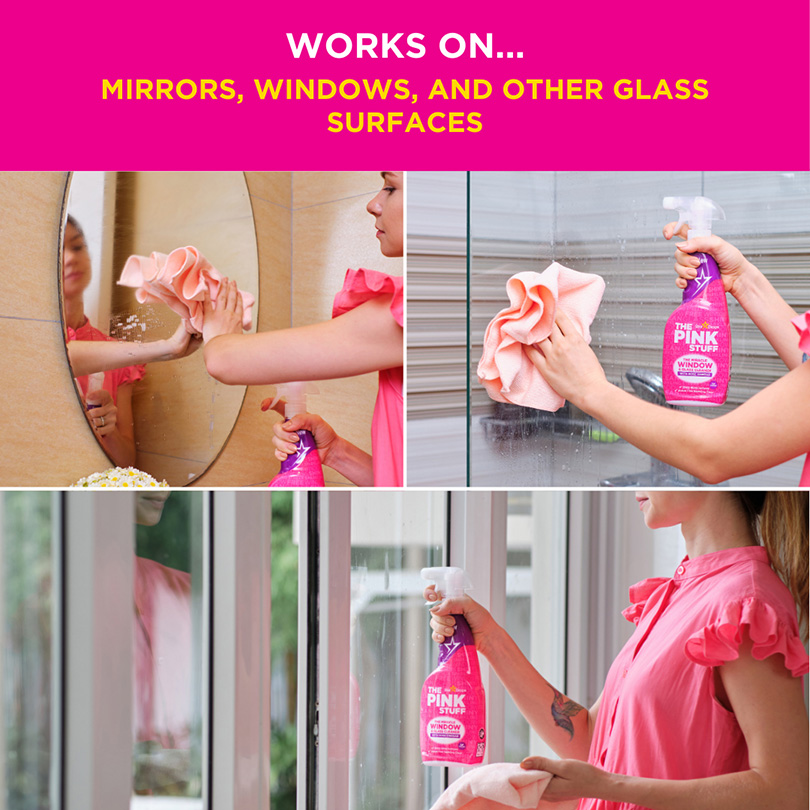

Унікальний засіб для миття вікон
Чисті вікна наповнюють дім світлом і затишком, проте звичне прибирання часто перетворюється на тривале очищення та полірування скла. Правильно підібраний засіб для миття вікон допомагає зробити цей процес простішим.
Сучасний мийний засіб призначений для видалення пилу, забруднень та слідів від пальців. Після використання поверхня скла повинна залишатися чистою без помітних розводів.
Особливості засобу
Під час вибору засобу варто звертати увагу на його склад, призначення та спосіб використання. Для регулярного миття можна обирати засоби, які призначені саме для скла та дзеркал.
- ефективне очищення поверхні;
- просте використання;
- видалення побутових забруднень;
- можливість використання для скла та дзеркал.
Як використовувати засіб
Перед використанням необхідно ознайомитися з інструкцією виробника. Засіб наносять на поверхню або серветку відповідно до рекомендацій, після чого скло протирають чистою тканиною.
Більше порад можна знайти на сторінці «Як правильно очистити вікна».
Інформацію про інші засоби можна переглянути на сторінці «Побутова хімія для дому».